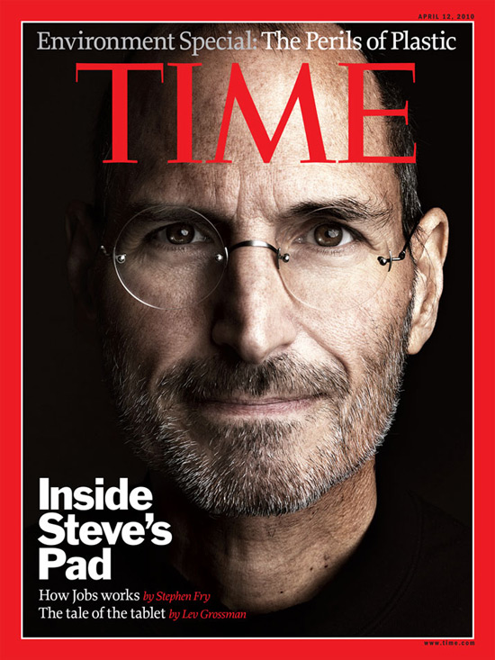

El secreto del Éxito de Apple

Steven Paul Jobs, dejo como parte de su legado, una empresa que experimenta, que tiene empatía e incorpora la visión y la experiencia del usuario en el desarrollo
de sus productos”. Allí destaca la implementación de metodologías como design-thinking..
Apple es una de las pocas empresas que no solo comercializa productos y servicios; vende un estilo de vida. A la altura de Harley-Davidson o Mercedes-Benz.
Y uno de los eternos debates entre sus fieles seguidores es si su envidiable capacidad de inventiva se ha enterrado en los últimos años por la ausencia de su cofundador.
Las comparaciones, dicen, son odiosas. En 2021, Tim Cook cumplirá diez años de gestión.
La vida de Steve Jobs se puede resumir en tecnología, creatividad, simplicidad y perfección.
Jobs motivaba a las personas para hacer cosas que nunca habían imaginado o pensaban que eran imposibles de llevar a cabo.
Pasión por el detalle en el diseño: hasta las piezas más ocultas tenían que tener una buena presentación y guardar armonía con el conjunto del aparato.
Jobs quería facilitar la vida a los usuarios desarrollando dispositivos que no requiriesen de un manual de instrucciones ni submenús ilimitados.
Escuchar a los demás en busca de ideas, control total de la experiencia del usuario, así garantizaba unos productos de calidad que se integraban perfectamente entre ellos.
Departamentos colaborativos y flexibles: la filosofía de Apple era la de construir una gran compañía con productos que se complementasen entre sí y satisficiesen todas las necesidades tecnológicas del usuario, por ello sólo había un único balance final de ingresos y gastos. De esta forma se fomentaba la colaboración entre los departamentos, ya que o todos tenían éxito o todos fracasaban.
Creatividad y diversión: los productos de Apple permitían a los clientes desarrollar su talento en muchos ámbitos de la vida, no sólo estaban pensados para el trabajo.
Simplicidad: Jobs estaba continuamente pensando en el minimalismo, llegando a eliminar el botón de encendido/apagado, quitando opciones fútiles de la interfaz o haciendo el software comprensible para cualquiera.